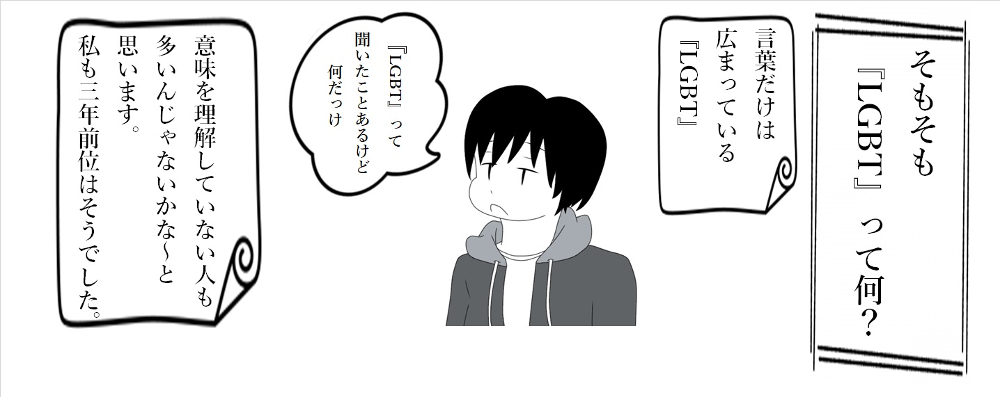

☆『LGBT＋QIA』とは！☆
☆セクシュアリティの定義☆
セクシュアリティとは、１つのものさしで測れるものではありません。
包括的な概念であり、以下のように3つの項目の組み合わせで定義されます。
包括的な概念であり、以下のように3つの項目の組み合わせで定義されます。
「①身体の性別」とは、セックスのことです。ただし、男性と女性だけではなく、両性の身体的特徴を持って生まれる場合もあるため、必ずしも2種類に分類できるわけではありません。
「②心の性別」とは、自分の性別についてどう感じているかということであり、性自認とも言われます。身体の性別には関係なく、単純に自分が自分の性別をどう認識しているかということです。
「③誰を好きになるか」は、性的指向を表します。性的欲求を含む恋愛感情を意味することもあれば、性的欲求を含まない場合もありますが、すべてを包括して性的指向と呼ばれています。 よって、その実質は人によってまちまちです。
「②心の性別」と「③誰を好きになるか」については、成長の過程で自分の認識が変わるなど、流動的な場合もあります。物心ついた時から心と身体の性別の違いに違和感があった人もいれば、思春期になって感じ始める人もいます。 はたまた50歳になって初めて、何かのきっかけで、自分の中に押し殺していた気持ちに気づいたという例もあるのです。
一方で、そもそも「②心の性別」や「③誰を好きになるか」の概念を持たない人も存在します。 自分が男性だとか女性だとか区別すること自体に違和感を持つ人や、異性にも同性にも恋愛感情を抱かない人がこの例です。 このように、身体の性別、心の性別、誰を好きになるか、これら3つの組み合わせによって決まるセクシュアリティには、無数の形が存在します。 一般に「ストレート」と呼ばれる、「身体の性別と心の性別が一致しており、異性を好きになる」形も、この無数のセクシュアリティのパターンの中のひとつなのです。
「②心の性別」とは、自分の性別についてどう感じているかということであり、性自認とも言われます。身体の性別には関係なく、単純に自分が自分の性別をどう認識しているかということです。
「③誰を好きになるか」は、性的指向を表します。性的欲求を含む恋愛感情を意味することもあれば、性的欲求を含まない場合もありますが、すべてを包括して性的指向と呼ばれています。 よって、その実質は人によってまちまちです。
「②心の性別」と「③誰を好きになるか」については、成長の過程で自分の認識が変わるなど、流動的な場合もあります。物心ついた時から心と身体の性別の違いに違和感があった人もいれば、思春期になって感じ始める人もいます。 はたまた50歳になって初めて、何かのきっかけで、自分の中に押し殺していた気持ちに気づいたという例もあるのです。
一方で、そもそも「②心の性別」や「③誰を好きになるか」の概念を持たない人も存在します。 自分が男性だとか女性だとか区別すること自体に違和感を持つ人や、異性にも同性にも恋愛感情を抱かない人がこの例です。 このように、身体の性別、心の性別、誰を好きになるか、これら3つの組み合わせによって決まるセクシュアリティには、無数の形が存在します。 一般に「ストレート」と呼ばれる、「身体の性別と心の性別が一致しており、異性を好きになる」形も、この無数のセクシュアリティのパターンの中のひとつなのです。